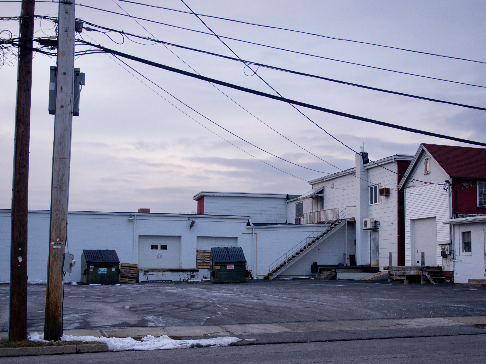
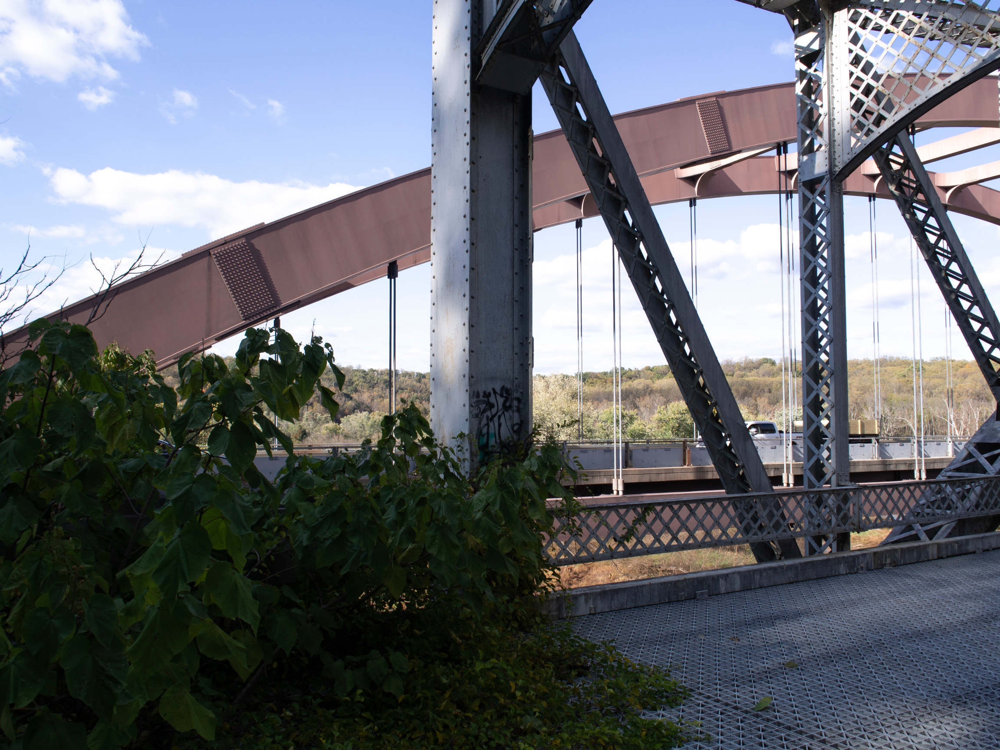
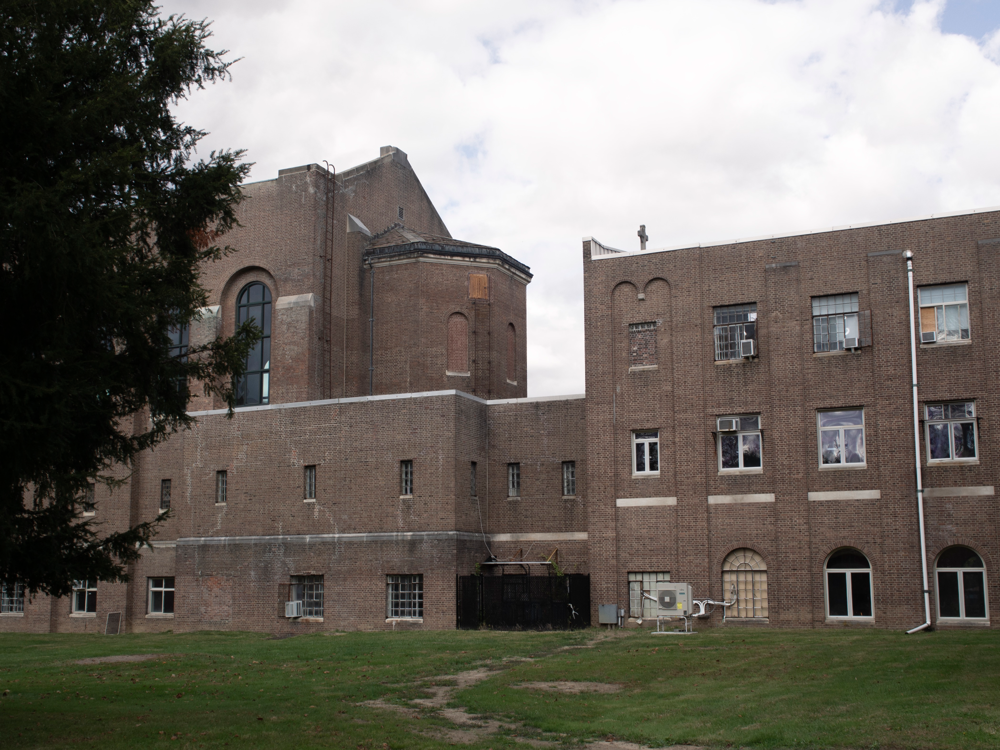

valleyvalley – art-214 final portfolio
final portfolio for art-214: digital and experimental photo. photos from arlington, ny, barrytown, ny, and around baltimore, md.








final portfolio for art-214: digital and experimental photo. photos from arlington, ny, barrytown, ny, and around baltimore, md.


